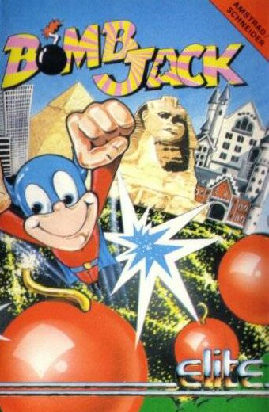
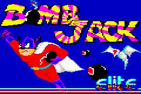
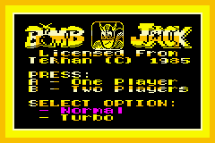
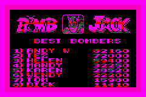
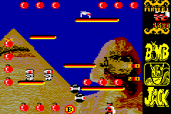
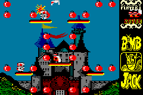
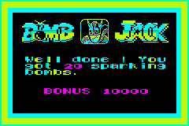
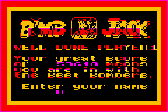
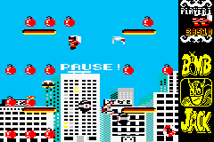
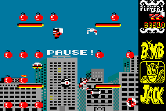

|
||||||||||||||||||||||||||
|---|---|---|---|---|---|---|---|---|---|---|---|---|---|---|---|---|---|---|---|---|---|---|---|---|---|---|
|

Story Jack is a super powered hero who has dedicated his life to truth, freedom and defusing the bombs that are regularly dispatched in his cozy world. Luckily, whoever makes these explosive devices is not really skillful: they never ever explode, no matter how long the fuses fizzle... However, traveling around the world to dispose of all the bombs isn't an easy task, as some of the planet's inhabitants prefer harassing Jack all day long rather than helping him in his quest!  Help Jack jump around the platforms, gather all the explosive devices and get the highest score! Do you think you can reach one million points? Start a game After the Nintendo's logo is displayed, the Amstrad CPC boot-up screen is shown. The game is automatically launched after the command run"bombjack is typed-in. You can bypass this intro sequence by pressing [A], [B] or [start] at any time.  The title screen is first loaded, but soon disappears, replaced by the menu. Again, you can bypass this phase by pressing the [A], [B] or [start] keys. Note that the mention "Music Edition" is displayed on the title screen when using Music Jack. To start a single player game, simply press [A] or [start]; to start a 2 players game, press [B] instead. Before starting a game, you can choose whether to use the "normal mode" or the "turbo mode" by pressing [select] or [up]/[down].  Note: if you don't start a game, then the menu will cyclically show the high scores table or start a demonstration game after a while. Press the [A], [B] or [start] keys to go back to the menu while the high scores are displayed or the demo is running. How to play Bombs are collected by traveling over them; when the first bomb on a screen is in the bag, another bomb starts fusing. It doesn't really matter in what order the bombs are collected, but if the active bombs are diffused in order then you'll be granted a big bonus!  Our little caped crusader can leap into the air and move left and right. Pushing [A] will make Jack jump, but keep in mind that the laws of gravity govern him: if our hero can take a bound into the air, he also falls down... However, repeated bashings on the [A] button will make him drift down at a slower rate while he is in the air, allowing him to fly, collect awkwardly positioned bombs, and evade the nasties! Pushing [up] while Jack is springing skyward activates the turbo mode, allowing him to jump much higher than usual. You can choose to play with turbo mode activated or deactivated from the menu.  Controls - [left] & [right]: move to the left or to the right, - [A]: jump (when on the ground) / stop the fall (when in the air), - [A] + [up]: turbo jump (when on the ground), - [start]: pause and save the game's state, - [select]: change the brightness of the game's background. Tips To make the game really playable, there is a certain tolerance in the collision of Jack with the enemies, bombs and bonus disks: there is contact only when 4 pixels or more overlap. This makes it possible to land between 2 bombs without touching any of them, or get really close to a nasty without losing a life! Also, it is said a cheat code exists... But that's a secret!
Jack has no weapons to kill the nasty creatures trying to stop him... Luckily, a disk bearing the letter "P" (Power) will arrive in the playing area every so often, and make the enemies vulnerable for a short while if collected: this power pill immobilizes all the nasties on the screen and turns them into smiling faces! Leaping through a disabled enemy not only eliminates it, but also awards points! A disk emblazoned with "E" (Energy) will give Jack another life if collected, whereas another disk showing "B" (Bonus) will increase the value of subsequent bombs gathered up on that screen. These disks will regularly appear in the play area, as long as you will collect sparking bombs... So try to dispose of the bombs in the right order, it will make Jack's life easier! 
 Enter your name! If you're good enough, you will certainly have a chance to record your name into the table of the 8 best bombers. To enter your name, use the [up] and [down] keys to select the letter you want, then press the [A] button to go to the next letter. You can also use the [left] and [right] arrows to change any letter that has already been chosen. Once you are happy with your entry, press [start] to validate it. Note: the high scores are saved into the cartridge; to reset the list, hold the [A] and [B] buttons while switching on your GBA. Game's state saving If you switch off your GBA while the game is paused (you can always pause the game by pressing [start]), then the game will automatically be restored the next time you'll switch on the handheld, allowing you to continue exactly from where you were! So don't worry if you haven't much time to play: Bomb Jack will never force you to give up! Note that the game's state is only saved while in pause; if you switch off your GBA without pausing first, then your game will be lost.   Background's brightness By default, the game's background appears a bit darker than on the original Amstrad version, which allows to better see some of the enemies. However, you can choose to change the brightness of the background by pressing [select] at any moment during the game, and see how difficult it can be to play with the original colors! Music Jack Music Jack is a PC (DOS) executable that allows easily adding music to Bomb Jack. It can take any wave file that has a sample rate lower or equal to 22050 Hz, and put it into the game. In Windows Explorer, simply drag and drop your wave files onto the program to generate the GBA ROM. Alternatively you can open a DOS command box and pass the the wave files names as arguments of Music Jack.exe. Note that the program uses the APDCM compression algorithm by default; you can specify whether the music shall be compressed or not using the options "-compress" and "-nocompress". You may also run Music Jack without any argument, in which case the GBA ROM it will generate won't contain any music (the game will be exactly the same as the original Bomb Jack, but the ROM will be a bit bigger because of the ADPCM decoder). The music starts right after the menu is first displayed, and then is played in a loop. You can press the [L] and [R] buttons whenever you want to change the track being played (press [L] to play the previous track, and [R] to go to the next one). Note that you don't need the original ROM to use Music Jack: it is a standalone program that embeds all the game data. Downloads - Bomb Jack: GBA ROM (50 KB), - Music Jack: PC executable (61 KB) / GBA demonstration ROM (16 MB), - Sources: RAR archive (166 KB). Other productions - Mario Balls: GBA ROM / sources, - God*: GBA ROM / sources. *Still under development. Greetings I recommend the following web resources: - Player Advance, - PDroms, - gbadev.org, - VisualHAM. Contact Nicolas ROBERT [NRX]: E-mail. |